Test Summary Yield / Bin Trend / SBL 工具說明Tool — README
一個 HTML 檔即可讀取半導體 test summary CSV，自動算出：
A single HTML file that reads semiconductor test summary CSV files and automatically shows:
- 每個 lot 的 First Yield 與 Final Yield（first pass
P+ 重測O） - Bin trend（每 lot / 日 / 週 / 月 / 季 / 年）、Pareto 與熱圖
- Tester / Loadboard performance 與 Tester × Loadboard 矩陣
- SBL（Statistical Bin Limit）判定：哪些 lot 要 HOLD、是哪個 bin 超限
- First Yield and Final Yield for every lot (first pass
P+ retestsO) - Bin trends (per lot / day / week / month / quarter / year), Pareto and heatmap
- Tester / Loadboard performance, and a Tester × Loadboard matrix
- SBL (Statistical Bin Limit) check: which lots are on HOLD and which bin broke the limit
完全離線在瀏覽器執行（免安裝、免伺服器、免網路）。本說明頁與流程圖也內建在這個檔案裡。上方 🌐 可切換整個工具的中文 / English，🌙 / ☀️ 切換深色 / 淺色；每張圖右上角的 ⛶ 一按即可放大。
It runs fully offline in the browser (no install, no server, no internet). This help page and its flowcharts are built into the same file. 🌐 switches the whole tool between Chinese and English, 🌙 / ☀️ switches dark / light mode, and the ⛶ button on every chart zooms it in with one click.
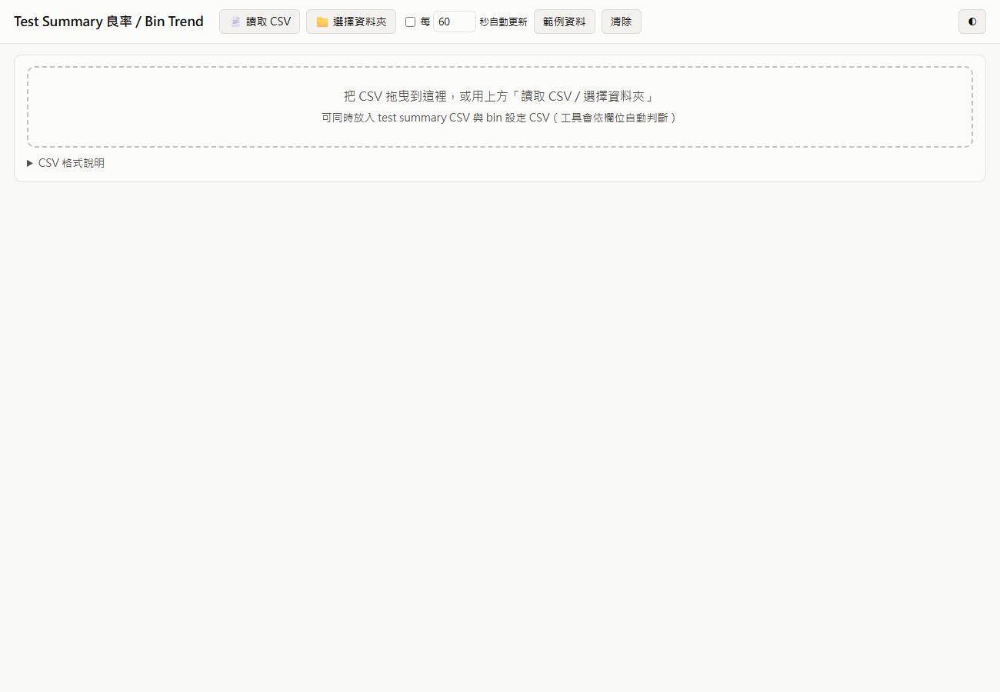
1. 快速開始1. Quick start
- 用 Chrome 或 Edge 開啟
test_summary_trend.html。 - 載入資料，任選一種：
- 📄 讀取 CSV：選一或多個 CSV。
- 📁 選擇資料夾：選資料夾，讀取裡面所有 CSV；下次開啟會自動重新連線。勾選 每 N 秒自動更新 可在檔案變動時自動重讀。
- 把 CSV 拖曳到頁面上。
- Test summary、bin 設定、SBL limit 可以一起載入，工具依欄位自動判斷檔案類型。
- 按 範例資料 可看示範。
- Open
test_summary_trend.htmlin Chrome or Edge. - Load data, choosing one of these ways:
- 📄 Open CSV: pick one or more CSV files.
- 📁 Folder: pick a folder; every CSV in it is read. Next time you open the page it reconnects automatically. Tick auto refresh every N s to re-read the folder when files change.
- Drag & drop CSV files onto the page.
- You can load the test summary, bin config and SBL limit files together. The tool detects each file's type from its columns.
- Click Sample data to see a demo.
Bin 設定與 SBL limit 會記在瀏覽器裡，直到你替換或清除。
Bin config and SBL limits are remembered in the browser until you replace or clear them.
2. 檔案2. Files
| 檔案File | 用途Purpose |
|---|---|
test_summary_trend.html | 工具本體（含本說明與流程圖，全部在這一個檔案）The tool, including this help page and the flowcharts — all in one file |
sample_test_summary.csv | 範例 test summary：162 lots、3 個測試廠，P + O，含多次重測Sample test summary: 162 lots at 3 test centers, P + O, multiple retests |
sample_bin_config.csv | 範例 bin 設定：HB1 良品；HB8 / HB9 / HB11 不可重測Sample bin config: HB1 = pass; HB8 / HB9 / HB11 not retestable |
sample_sbl_limit.csv | 範例 SBL limitSample SBL limits |
README.md | 同內容的 Markdown 版（GitHub / VS Code 用）The same content as Markdown (for GitHub / VS Code) |
docs/images/ | 本說明使用的截圖Screenshots used in this help page |
3. CSV 格式3. CSV formats
欄位名稱不分大小寫、順序不拘；檔案可為 UTF-8 或 Big5（Excel）。
Column names are not case-sensitive, the column order doesn't matter, and the file can be UTF-8 or Big5 (Excel).
3.1 Test summary CSV
Date,Lot,Product,Stage,TestCenter,TestMode,Tester,Loadboard,Input,HB1,HB2,HB3,...,HBn 2026/09/01 02:00,LA02601,ABC123,FT1,Kaohsiung,P,T02,LB-C1,3864,3747,16,13,... 2026/09/01 05:00,LA02601,ABC123,FT1,Kaohsiung,O,T02,LB-C1,96,56,5,3,...
| 欄位Column | 意義Meaning | 可接受名稱Accepted names |
|---|---|---|
| Date | 測試日期（時間可省略）Test date (time optional) | Date, Test Date, Start Time, 日期(Chinese name) … |
| Lot | Lot ID | Lot, Lot ID, LotNo … |
| Product | 產品 / deviceProduct / device | Product, Device, Part … |
| Stage | 測試站別Test stage | Stage, Step … |
| Test Center | 測試廠 / 測試中心（可省略）；可用於篩選、分組比較與 Test Center 表現Test site / test house (optional). Used by the filter, “Compare by” and Test Center performance | Test Center, TestCenter, Test Site, Site, Location, Subcon, OSAT … |
| TestMode | P = 第一次測，O = 重測（可寫 O1、O2 …）P = first test, O = retest (O1, O2 … allowed) | TestMode, Mode, Flow |
| Tester | Tester ID | Tester, ATE … |
| Loadboard | Loadboard ID | Loadboard, LB, DIB … |
| Input | 可省略；省略時以所有 bin 加總Optional; if missing, the sum of the bins is used | Input, Qty, Total |
| HBn | Hard bin 數量Hard-bin counts | HB1, HBIN1, BIN1, HB_01 |
支援的日期格式：2026/09/01、2026-09-01 14:30、20260901、09/01/2026 2:30 PM、2026/9/1 下午 02:30，以及 Excel 日期序號。
Supported date formats: 2026/09/01, 2026-09-01 14:30, 20260901, 09/01/2026 2:30 PM, Chinese AM/PM markers, and Excel serial numbers.
3.2 Bin 設定 CSV（良品 bin / 不可重測 bin）3.2 Bin config CSV (good bins / non-retestable bins)
Bin,Description,Retestable,Pass HB1,Pass,Y,Y HB8,Open/Short,N,N HB9,Continuity,N,N HB11,Burn/Damage,N,N
Retestable = N表示不可重測：落在此 bin 的顆數直接算 final fail，不會進重測。Pass = Y表示良品 bin（預設 HB1）。- 只有一欄
Bin的檔案 = 列出的 bin 全部不可重測。 - 也可以直接在頁面下方的 Bin 設定 修改。
Retestable = Nmeans the bin is not retestable. Units in it are a final fail and are never retested.Pass = Ymarks a good bin (default: HB1).- A file with only a
Bincolumn means "every listed bin is non-retestable". - You can also edit these settings directly in the page (Bin config section at the bottom).
3.3 SBL limit CSV
Product,Stage,Bin,Basis,Max_Pct,Max_Qty,Min_Pct,Remark *,*,HB5,P,1.40,,,Scan *,*,HB8,Final,0.50,,,Open/Short *,*,HB11,Final,0.30,8,,limit in % and pcs XYZ789,*,HB4,P,1.10,,,stricter for XYZ789 *,*,FIRST_YIELD,,,,94.5, ABC123,FT2,FINAL_YIELD,,,,97.0,
| 欄位Column | 意義Meaning |
|---|---|
| Product / Stage | * 或空白 = 全部適用* or blank = applies to all |
| Bin | HB5 等，或 FIRST_YIELD / FINAL_YIELDHB5 etc., or FIRST_YIELD / FINAL_YIELD |
| Basis | P = 以 first pass 數量計（預設）；Final = 以重測後數量計P = first-pass count (default); Final = count after retests |
| Max_Pct | 上限，佔 P Input 的 %（1.4 = 1.4%）Upper limit in % of P Input (1.4 = 1.4%) |
| Max_Qty | 顆數上限（可與 Max_Pct 並用）Upper limit in pieces (can be used together with Max_Pct) |
| Min_Pct | 下限，用於良率項目（%）Lower limit, for yield items (%) |
同一 lot、同一 bin 有多條規則符合時，最精確的規則優先：Product+Stage › Product › Stage › *。
If several rows match the same lot and bin, the most specific row wins: Product+Stage › Product › Stage › *.
4. 運作方式（流程圖）4. How it works (flowcharts)
流程圖直接畫在本頁（不需網路），會跟著深色 / 淺色主題與語言切換。The diagrams are drawn inside this page (no internet needed) and follow the dark / light theme and the language setting.
4.1 整體資料流程4.1 Overall data flow
4.2 單一 lot 的良率計算4.2 Yield calculation for one lot
計算範例（範例資料中的 lot LA02601）：
Worked example (lot LA02601 in the sample):
| 步驟Step | Input | 良品Good | 可重測 failRetestable fails | 不可重測 (HB8/9/11)Non-retestable (HB8/9/11) |
|---|---|---|---|---|
| P | 3,864 | 3,747 | 96 | 21 |
| O 第 1 輪O round 1 | 96 | 56 | 40 | 0 |
| O 第 2 輪O round 2 | 40 | 11 | 29 | 0 |
| 結果Result | 3,814 |
- First Yield = 3,747 ÷ 3,864 = 96.97%
- Final Yield = 3,814 ÷ 3,864 = 98.71%
- Final fail = 21（不可重測）+ 29（最後一輪）= 50 → 3,814 + 50 = 3,864 ✓Final fails = 21 (non-retestable) + 29 (last round) = 50 → 3,814 + 50 = 3,864 ✓
4.3 重測（O）資料分輪4.3 Splitting retest (O) rows into rounds
規則：每一輪重測的 Input = 上一輪的可重測 fail 數。因此即使 CSV 只有日期（沒有時間）、資料順序亂掉、或同一輪分到兩台機台重測，都能正確分輪。
The rule: each retest round's Input = the previous round's retestable fails. Because of that, rounds are found correctly even when the CSV has only a date (no time), when the rows are out of order, or when one round was split across two testers.
4.4 SBL HOLD 判定4.4 SBL HOLD decision
4.5 資料夾自動更新4.5 Folder auto-refresh
5. 畫面說明5. Screens
截圖為工具的中文介面。Screenshots show the tool's Chinese interface (switch with 🌐).
5.1 篩選與 KPI5.1 Filters and KPI
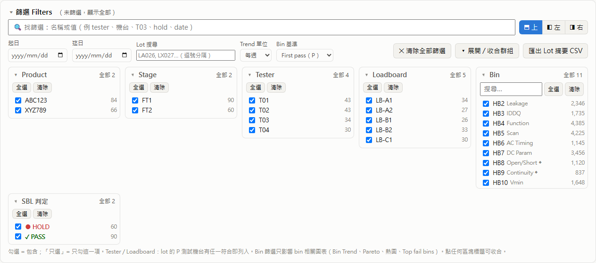
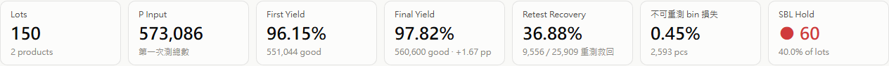
多選篩選：每一組都可點標題收合。
Multi-select filters. Each group can be collapsed (click its title):
| 群組Group | 篩選對象Filters | 說明Notes |
|---|---|---|
| Product / Stage | lots | |
| Test Center | lots | lot 的 P 測試廠Test center of the lot’s P test |
| Tester / Loadboard | lots | lot 的 P 測試機台 / loadboard 任一被選中就納入A lot is included if any of its P testers / loadboards is selected |
| Bin | 只影響 bin 圖表bin charts only | Bin trend、Pareto、熱圖、Top fail bin；lot 數與良率不變Bin trend, Pareto, heatmap, Top fail bins. Lot counts and yields are not changed |
| SBL 判定SBL status | lots | HOLD / 待重測wait for retest / PASS / 無 limitno limit |
| 起日 / 迄日From / To date | lots | 以 P 測試日期為準Date of the P test |
| Lot 搜尋Lot search | lots | lot ID 的一部分；多個用逗號分隔（例 LX027, LA0260）Part of a lot ID; several, comma-separated (e.g. LX027, LA0260) |
- 每組可勾選 / 取消項目；滑過項目出現 只選 = 只保留該項；全選 / 清除。超過 8 項的群組有搜尋框。
- 項目旁的數字 = lot 數（Bin 為 P fail 顆數）。
- 生效中的篩選會以標籤顯示在 篩選 Filters 標題旁；點標籤的 ✕ 移除，或按 ✕ 清除全部篩選。
- 篩選位置：上 / 左 / 右（篩選區上方 ⬒ 上 / ◧ 左 / ◨ 右）。左 / 右時篩選變成側欄，捲動圖表時固定不動；收合側欄會縮成細條，圖表用滿寬度。位置會被記住；視窗窄於 900 px 時固定回到上方。
- 找篩選：在 🔍 找篩選 輸入（任何地方按
/跳到這裡，Esc清除）。可輸入篩選名稱（中英皆可：tester/機台、loadboard/LB、product/產品、site/測試廠、bin、sbl/hold、date/日期、trend…），或篩選值（例T03、LB-B2、scan），符合的群組會打開並只顯示符合的項目。 - 放大 ⛶：每張圖（含說明頁流程圖）右上角的方形按鈕，一按放大；按 ✕、
Esc或點外面關閉。 - 可收合區塊：點任一區塊標題（▾）收合 / 展開，狀態會被記住。
- Bin 基準：
First pass (P)或Final（重測後），影響 bin trend、Pareto 與熱圖。 - Trend 單位：Yield trend、Bin trend 與熱圖可依 lot / 日 / 週 / 月 / 季 / 年 分組。週 = ISO 週（週一到週日，例
2026-W05），季 =2026-Q1（1–3 月），年 =2026。每個點為加權良率：該期間所有 lot 的 Σ 良品 ÷ Σ P Input；lot 依 P 測試日期歸入期間。超過 1,000 lots 時自動由每 lot 改成每日。
- In each group: tick / untick items, only (shown on hover) keeps only that item, and all / none select all or none. Groups with more than 8 items have a search box.
- The number next to each item = lots (for Bin: P fail pieces).
- Active filters appear as chips next to the Filters title. Click ✕ on a chip to remove that filter, or ✕ clear all filters to remove all.
- Filter position: top, left or right (⬒ / ◧ / ◨ at the top of the filter panel). Left / right turns the filters into a sidebar that stays in place while you scroll; collapsing it shrinks it to a narrow strip so the charts use the full width. The position is remembered; below 900 px wide the filters go back to the top.
- Find a filter: type in 🔍 find filter (press
/anywhere to jump to it,Escto clear). Type a filter name in English or Chinese (tester,loadboard/LB,product,site/test center,bin,sbl/hold,date,trend…) or a filter value (e.g.T03,LB-B2,scan); the matching groups open and show only the matching values. - Zoom ⛶: the square button on every chart (and every help-page flowchart) opens it large with one click; ✕,
Escor a click outside closes it. - Collapsible sections: click any section title (▾) to collapse or expand it. The state is remembered.
- Bin basis:
First pass (P)orFinal(after retests). It affects the bin trend, Pareto and heatmap. - Trend unit: groups the Yield trend, Bin trend and heatmap by lot / day / week / month / quarter / year. Week = ISO week (Monday–Sunday, e.g.
2026-W05), quarter =2026-Q1(Jan–Mar), year =2026. Each point is a weighted yield: Σ good ÷ Σ P Input of all lots in the period; a lot belongs to the period of its P test date. Above 1,000 lots, per-lot switches to daily automatically.
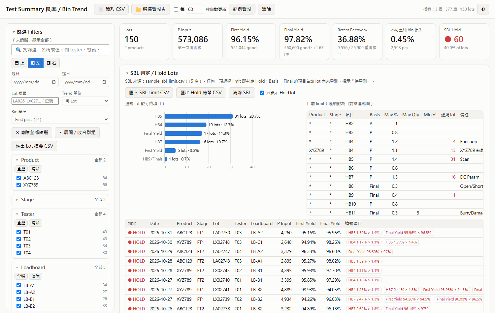
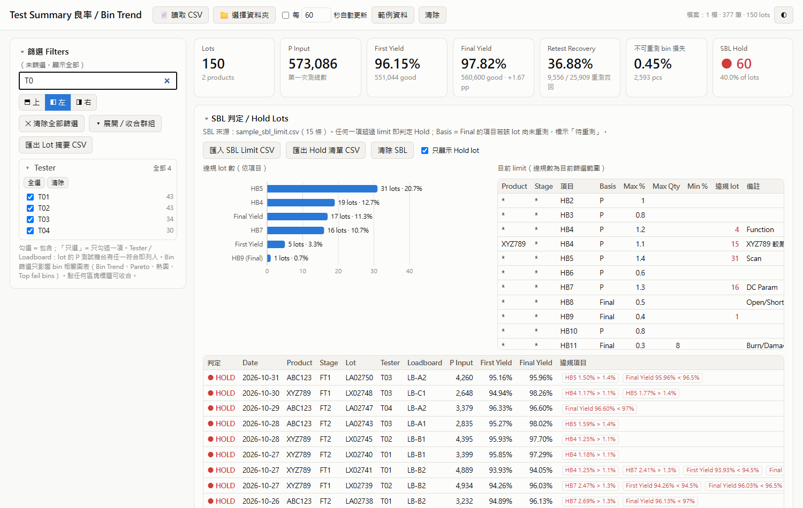
5.2 SBL / Hold lots5.2 SBL / Hold lots
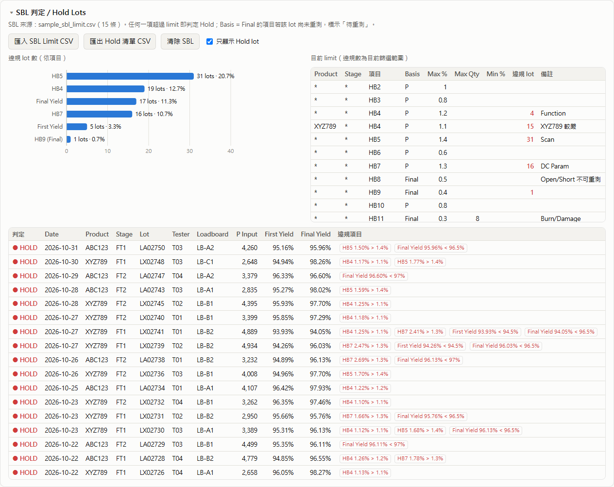
- 左：各 limit 超限的 lot 數。
- 右：生效中的 limit 與超限 lot 數。
- 下：Hold 清單與每筆違規。
- 匯出 Hold 清單 CSV 匯出清單。
- Left: how many lots broke each limit.
- Right: the active limits, with how many lots broke each one.
- Below: the hold list with each violation.
- Export hold list CSV exports the list.
5.3 Yield trend
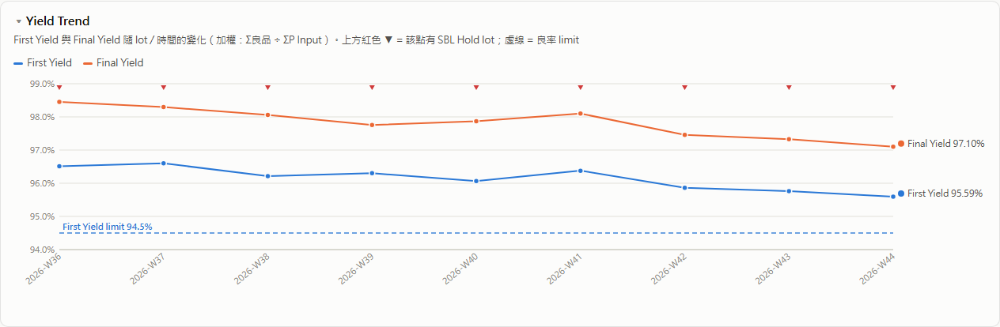
- 時間單位：Lot / 日 / 週 / 月 / 季 / 年，只改這張圖（篩選區的 Trend 單位會一次設定全部）。
- 圖表：折線（加權 First / Final Yield）、損失長條（整根 = First Yield 損失；下段 = 重測後仍 fail 的 Final 損失，上段 = 重測救回）、箱形圖（每期間各 lot 良率分佈：箱 = Q1–Q3，粗線 = 中位數，鬚 = 1.5×IQR，圈 = 離群 lot；需依時間分組，從每 Lot 選箱形圖會自動改為每週）。
- 分組比較：不分 / Product / Test Center，每個產品或測試廠各畫一條線（或一組長條 / 箱形），另選 First 或 Final Yield。每個產品 / 測試廠顏色固定（依 P Input 由大到小），篩選不會改色；超過 8 個時前 7 個以外合併為「其他」。需依時間分組，從每 Lot 選會自動改為每週。
- 上方紅色 ▼ = 該點含 HOLD lot。
- 虛線 = 良率 limit。
- 滑過點可看明細。
- Time unit: lot / day / week / month / quarter / year, for this chart only (the filter panel’s Trend unit sets all charts at once).
- Chart: Line (weighted First / Final Yield), Loss bars (whole bar = First Yield loss; lower part = Final loss still failing, upper part = recovered by retest) or Box plot (spread of lot yields per period: box = Q1–Q3, thick line = median, whiskers = 1.5×IQR, circles = outlier lots; it needs a time unit, so choosing it from per-lot switches to weekly).
- Compare by: None / Product / Test Center draws one line (or one set of bars / boxes) per product or test center, for First or Final Yield. Each product / test center keeps its colour (ranked by P Input), so filtering never repaints it; with more than 8, everything after the first 7 is merged into “Other”. It needs a time unit, so choosing it from per-lot switches to weekly.
- Red ▼ at the top = this point contains a HOLD lot.
- Dashed lines = yield limits.
- Hover a point for details.
5.4 Bin trend
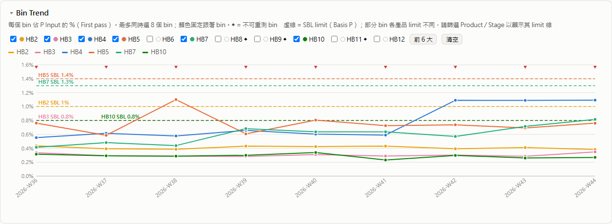
- 最多選 8 個 bin，每個 bin 顏色固定。
- 可各自選時間單位與圖表：折線、堆疊長條（所選 bin 加總）、分組長條。
- 分組比較：Product / Test Center 時每條線 = 一個產品或測試廠的所選 bin 合計（只勾一個 bin 就是該 bin），堆疊長條改以分組長條顯示。
- 虛線 = SBL limit；畫面中所有 lot 使用同一 limit 時才顯示，可用 Product / Stage 篩選看產品專屬 limit。
- Pick up to 8 bins. Each bin keeps its own colour.
- Own time unit and chart: Line, Stacked bars (total of the selected bins) or Grouped bars.
- Compare by Product / Test Center: each line = the selected bins combined for one product or test center (tick a single bin to see just that bin). Stacked bars are shown as grouped bars.
- Dashed lines = SBL limits. They are shown when every lot in the view uses the same limit; filter by Product / Stage to see product-specific limits.
5.5 Pareto 與熱圖5.5 Pareto and heatmap
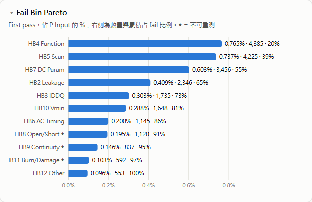
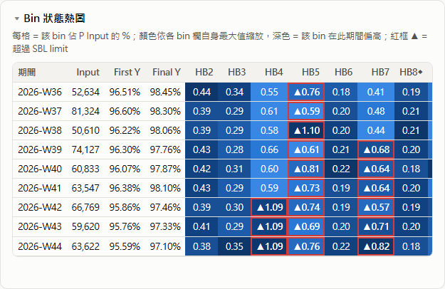
熱圖顏色依每個 bin 欄位各自縮放；紅框加 ▲ = 超過 SBL limit。
Heatmap colour is scaled per bin column. A red border with ▲ = over the SBL limit.
5.6 Tester / Loadboard / Test Center performance
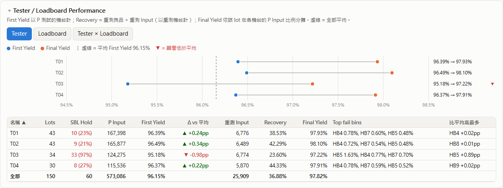
- 分頁：Tester / Loadboard / Tester × Loadboard / Test Center / Product。
- First Yield 算在跑 P 的機台；Recovery 算在跑重測的機台。
- ▼ = First Yield 顯著低於平均：超過 2σ（二項分佈）且差距大於 0.2 pp。
- 比平均高最多 = 該機台高出平均最多的 bin，通常就是主因。
- Tabs: Tester / Loadboard / Tester × Loadboard / Test Center / Product.
- First Yield is counted on the tester that ran P. Recovery is counted on the tester that ran the retest.
- ▼ = First Yield significantly below average: more than 2σ (binomial) and more than 0.2 pp.
- Most above average = the bin that is most above the average on this tester. This is usually the root cause.
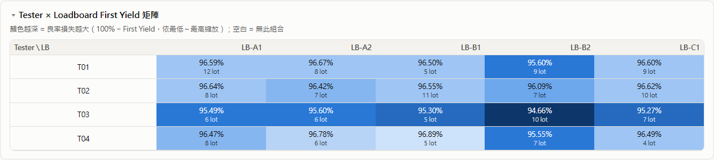
5.7 Lot 明細與 Bin 設定5.7 Lot table and bin config
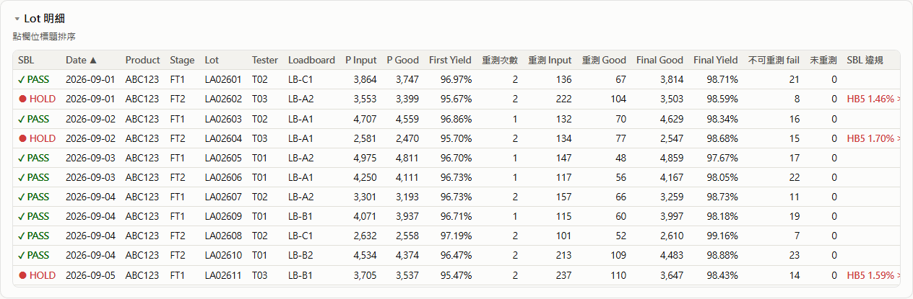
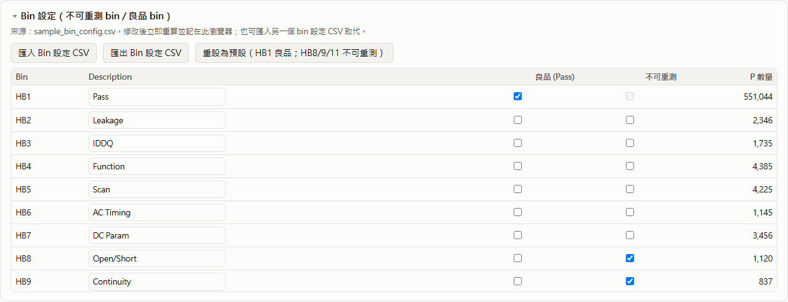
6. 大量資料6. Big data
在本機 Chrome（headless）實測，每列 32 個 bin：
Measured in Chrome (headless) on this PC, with 32 bins per row:
| Lots | CSV 列數CSV rows | 檔案大小File size | 載入Load | 變更篩選Filter change | 瀏覽器記憶體Browser memory |
|---|---|---|---|---|---|
| 10,000 | 20 k | 2 MB | 2 s | 1 s | 40 MB |
| 50,000 | 98 k | 11 MB | 4 s | 1.5 s | 160 MB |
| 200,000 | 394 k | 46 MB | 13 s | 5 s | 620 MB |
| 500,000 | 986 k | 114 MB | 44 s | 20 s | 1.6 GB |
- 約 200,000 lots / 50 MB 以內使用順暢；100 萬列仍可用，但較慢。
- 表格顯示前 1,000 列（排序以全部資料計算），熱圖顯示最新 400 列；匯出 CSV 一律包含全部資料。
- 歷史資料很大時，建議每個期間一個資料夾（例如每季），或用日期篩選。
- Comfortable up to about 200,000 lots / 50 MB. It still works at 1M rows, but slowly.
- Tables show the first 1,000 rows (sorted over all data), and the heatmap shows the latest 400 rows. Export CSV always contains everything.
- For very large histories, keep one folder per period (e.g. per quarter), or filter by date.
7. 常見問題7. FAQ
- 同一個 lot 有很多次 O 重測，可以嗎？
- 可以，見 4.3。只有日期、順序亂掉、重測分到多台機台都能處理；Final Yield 一定正確。若無法分輪（只有日期、沒有輪次編號、且有部分重測），只有 final bin 分佈可能略有誤差；寫成
O1、O2… 或加上時間即可避免。 - 哪些 bin 算良品？
- 預設 HB1。可在 Bin 設定 或 bin 設定 CSV 把其他 bin 標為 Pass。
- Bin
NR是什麼？ - 以可重測 bin fail、但沒有被重測的顆數（P fail 減去進入重測的數量）。
- 「◐ 待重測」是什麼意思？
- 該 lot 只違反
Final基準的 limit，且尚未重測；重測後結果可能改變，所以不算 HOLD。 - 需要網路嗎？
- 不需要。
test_summary_trend.html不使用任何外部檔案，本說明的流程圖也是內建繪製。 - 用哪個瀏覽器？
- Chrome 或 Edge；讀取資料夾（📁）需要這兩者之一。開檔與拖曳在 Firefox 也可用。
- The same lot has many O tests. Is that OK?
- Yes. See 4.3. It works with date-only data, rows out of order, and retests split over several testers. Final Yield is always exact. If rounds can't be told apart (date only, no round numbers, and a partial retest), only the final bin split may be slightly off. Writing
O1,O2… or adding a time avoids this. - Which bins are "good"?
- HB1 by default. Mark other bins as Pass in Bin config or in the bin config CSV.
- What is bin
NR? - Units that failed with a retestable bin but were never retested (P fails minus the units that went into the retest).
- What does "◐ wait for retest" mean?
- The lot only breaks a
Final-basis limit and has not been retested yet. A retest may still change the result, so it is not counted as HOLD. - Do I need internet?
- No.
test_summary_trend.htmluses no external files; the flowcharts on this page are drawn by the page itself. - Which browser?
- Chrome or Edge. Folder reading (📁) needs one of them. Opening files and drag & drop also work in Firefox.